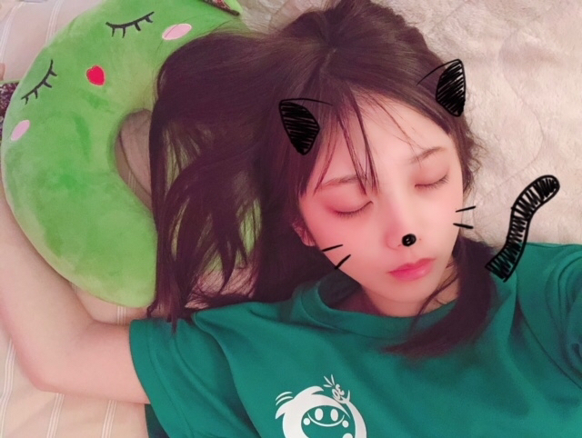

愛称は、よだちゃん、与田ちゃん、よだっちょ、よだよだ。チャームポイントは茶色い目、声。家族構成は父、母、弟。キャッチフレーズは「ちっちゃいけど色気はあるとよ!」。長所は、やるときはやること。短所は、要領が悪いこと。忘れ物が多く、注意力と記憶力がなく、抜けていると自称し、学校に筆箱と間違えて同じく黒色のリモコンを持っていったことがある、乃木坂46のレッスン初日に久保史緒里と共にレッスン場を間違えた上に帰りにシューズをレッスン場に置き忘れたり、レッスン着を持参し忘れたり、ペットボトルのフタを閉め忘れたり、すべての持ち物を忘れて美容院から帰ろうとしてしまったことがある。また、極度の方向音痴で、東京だけでなく、道が単純な地元でも迷ってしまうことがある。AKB48の福岡聖菜、浅井七海、佐藤妃星とは、高校時代の同級生で、クラスメイトであった。
好きな食べ物は、焼き芋、もつ鍋、ケーキ、とんこつラーメン、お肉、フルーツ、クレープ、焼き鳥、おつまみ系、ジャガイモ、ブルーベリーヨーグルトスムージー。嫌いな食べ物は、牛乳、キノコ類。好きな色は、赤、ピンク系。クリスマスカラーの赤と緑の組み合わせが好き。好きな季節は秋。理由は、暑いのと寒いのが苦手で、花粉症であるから。好きな数字は9。好きな曲は、井上苑子「夢」。好きな本は『LARME』。好きな映画は『世界の中心で、愛をさけぶ』。好きなファッションブランドは、dazzlin、Supreme La. La.yohji yamamoto。好きな言葉は「自分がされて嫌なことは人にもしない」。好きなテレビ番組は『乃木坂工事中』、『ミュージックステーション』。テンションが上がるのは絶叫マシーンに乗ったとき。
趣味は、映画やドラマを観ること。また、動物に囲まれて育ったこともあって、動物が好き。実家には庭、その周りには丘や草むらがあり、庭では犬（たろう）、猫（ちび）、ウサギ二匹（どん・ぐり）などを飼っている。かつて飼っていたヤギ（メープル。あだ名はぶんぞう）は2016年12月29日に、飼い始めてから数か月で息を引き取ったが、その後新たなヤギを飼い始めた（シロップ。あだ名はごんぞう）。ヤギとの出会いについては、「庭に草がたくさん生えていて、お母さんが『ヤギに食べてもらえたらいいね』といっていたら、ある日突然家にヤギがいた」と語っている。
特技は一輪車に乗ること、誰とでも仲良くなれること、話を聞くこと、水泳。一輪車は「お見立て会」でも披露された。通っていた小学校の児童が少人数であったため、毎年運動会で全員での一輪車演技があり、その関係で小学1年生の頃から一輪車を始めた。高学年の頃は片足乗りやバックなどもしていた。スポーツは、小学校での一輪車、水泳5年間、スケート、中学の部活でのソフトテニスの経験があり、好きではあるものの、一輪車と水泳を除いてあまり得意ではない。スキップが出来なかったが、お見立て会で披露する「ガールズルール」のレッスンでなんとか習得した。しかし、その後の3人のプリンシパルで披露する「ぐるぐるカーテン」のレッスンでも苦しんだ。 2017年8月7日放送のテレビ番組『乃木坂工事中』の「18枚目シングルヒット祈願企画」で、ウミガメに会うためにスクーバダイビングのCカードライセンス（エントリーレベル）を取得した。
乃木坂46で憧れていたメンバーは生田絵梨花。乃木坂46で目標にしている人は生田絵梨花と西野七瀬。乃木坂46で好きな曲は「光合成希望」、「羽根の記憶」、「悲しみの忘れ方」、「立ち直り中」。乃木坂46で好きなミュージック・ビデオは「羽根の記憶」、「悲しみの忘れ方」、「立ち直り中」。 乃木坂46の好きなところは衣装も歌もダンスも先輩もかわいいところ。 乃木坂46での仕事に対して「普通の高校生の当たり前を捨てるだけの価値がある世界だと思うので、一生懸命やっていきたい」と語っている。